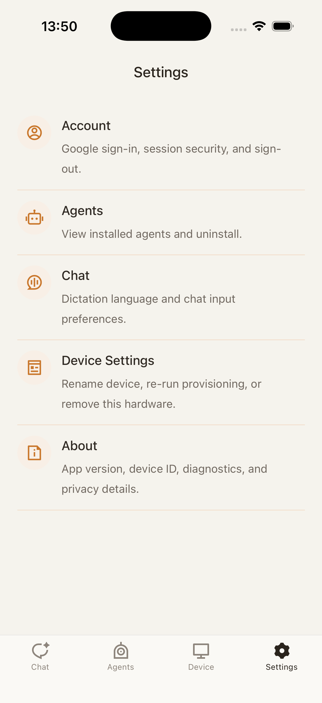
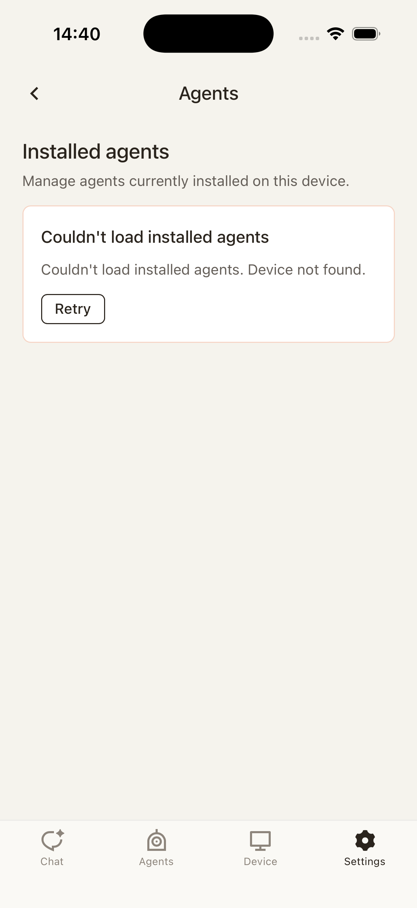

Sign In, Then Enter Main App
ONB-001 only handles sign-in. After successful sign-in, the user enters the Agents home and persistent banners continue setup guidance.
ONB-001 only handles sign-in. After successful sign-in, the user enters the Agents home and persistent banners continue setup guidance.
Unpaired device and no purchased/adopted Agent are two independent banners. Each disappears when its own condition is met.
Marketplace must show descriptions and brand images/screenshots. After Purchase/Adopt, return to the Agents session list.
Agents is a WeChat-style conversation list. Tapping an Agent row opens a clean chat page; state lives in the header only.
The Device tab shows overview, health, and logs; it does not own onboarding reset.
The Me page owns account information and sign-out. Sign-out returns to ONB-001.
Me manages installed Agents, delete/uninstall, rename, and device removal. Risky actions require confirmation.
Sign-in is the prerequisite for pairing and purchase/adoption ownership. After sign-in, enter the main app directly.
This banner disappears after successful pairing. It does not depend on whether the user has an Agent.
This banner disappears once the mobile app has purchased or adopted any Agent.
The Agent instance keeps running on the phone. When not installed to hardware, device action entry points are not shown.
The header toolbar shows Not installed. Chat stays clean, with no extra toolbar below the header.
After Install to device, Device and Chat header show current binding. Chat remains the same conversation.
Only sign-in remains as a blocking onboarding step. After sign-in, go directly to the main app; pairing and Agent acquisition continue through persistent banners.
Sign-in establishes account identity, purchase/adoption ownership, sync, and device ownership.
ONB-001 only shows sign-in and required copy. After sign-in, go directly to the main app.
The main app continues guidance instead of putting pairing and Agent choice back into onboarding.
The user enters pairing from the main app device banner or Device tab. Successful pairing only removes the device banner; it does not automatically purchase, adopt, or install an Agent.
Nearby device. Confirm the pairing code shown on the device.
Continue only when the codes match.
Pairing establishes local trust between phone and hardware; it does not mean an Agent is installed to hardware.
Device banner has disappeared; Agent banner remains.
After pairing succeeds, the device prompt disappears. If no Agent has been purchased/adopted, the Agent banner remains.
Purchase/Adopt gives the user an Agent on the phone and enables chat. Install to device installs that Agent to hardware. Before install, device action entry points are hidden while phone chat remains available.
Home routines, reminders, and device-aware check-ins.
Each Agent shows the description, brand image, or screenshots uploaded from the editor client; mobile must render them too.
I am ready to help organize tonight.
Yesterday's device check is complete.
The Agents page behaves like a chat app conversation list. Tap an Agent row to open its clean chat page.
Bound/install state appears only in the header toolbar; there is no extra toolbar below the header.
This is not a separate history page; it shows that messages before and after hardware install remain in the same Agent conversation.
This journey comes from MOB-06 and the current `DevicePage` / `DeviceHealthPage` / `DeviceLogsPage`. The Device tab is the hardware state and diagnostics entry point; it does not rerun onboarding. Risky actions live in Me device management.
updated just now
09:48 · Agent installed
Show device identity, online status, Agent connection, battery, Wi-Fi, and logs stream.
last seen just now
current binding matches device report
Open from Device overview; keep current device context when going back.
Home Companion generation 42 acknowledged.
Phone trust established for Nora Dev Kit A14.
Log list is scrollable and tied to active device.
Logs explain device state only; they do not change device connection or Agent chat.
This journey comes from MOB-07 Account and `SettingsAccountPage`. In the target navigation, Settings maps to Me; the Account row opens account detail, and successful Sign Out clears the session and returns to ONB-001.
Google sign-in, session security, sign-out
Manage owned and installed agents
Rename, pair another, remove device
Version, diagnostics, privacy
The existing Settings home should collapse into the target Me tab.
zhaowei@example.com
This phone is tied to your signed-in account.
Sign-out clears bearer/session state; on success, root replace to the sign-in page.
This journey comes from MOB-07 Agent settings, `SettingsAgentPage`, and `AgentUninstallDialog`. Current code semantics are uninstall from device; the target interaction can place the entry under Me Agents management. Delete/uninstall requires confirmation and failure recovery.
v0.9.0 · Ready · installed today
v0.9.0 · Starting · installed yesterday
The Agents tab is the chat conversation list; Me / Agents is the management list, showing version, runtime state, and delete action.
The Agent will stop running on this device. Owned data remains in cloud unless the product later adds account-level delete.
The confirmation sheet follows the current uninstall dialog semantics; failures stay in the sheet for retry.
v0.9.0 · Ready · installed yesterday
If this is the user's last Agent, the main Agents page should show the no-Agent banner again.
This journey comes from MOB-07 Device settings and `SettingsDevicePage`. The Device tab is for viewing state; Me / Device Settings owns state-changing actions such as pair another, rename, and remove device.
Switch device · Pair another
Change local display name
Start pair flow from signed-in context
Disconnect this hardware from this phone
This page owns actions that change local device state, separated from Device diagnostics.
This removes Nora Dev Kit A14 from this phone. Cloud unpairing is handled separately.
If this is the last device, the main Agents page shows the device banner again.
| State | Agents | Marketplace | Device | Chat | Exit Condition / Gate |
|---|---|---|---|---|---|
| Signed Out | Return to ONB-001 sign-in page | Shown after sign-in | Shown after sign-in | Enter after sign-in | Enter main app after successful sign-in |
| Device Not Paired | Show device banner | Can still browse and Purchase / Adopt | Provide Pair entry | Purchased Agents can still chat on phone; hardware action entry points are hidden | Device banner disappears after Pair succeeds |
| No Agent | Show no-Agent banner; do not render an empty list | Show Agents available for Purchase / Adopt | Unaffected | No Agent session to enter | Disappears after purchasing or adopting any Agent |
| Purchased / Adopted | Agent appears in the session list | Show owned state | Can choose Install to device | Phone-side chat enabled | Does not require hardware install |
| Not Installed To Hardware | Agents list remains normal | Detail page shows Install to device | Device and Chat header show Not installed | Phone chat is available; no unsendable chat state appears | Header updates after Install to device succeeds |
| Installed To Hardware | Session row shows installed/current | Can continue browsing other Agents | Show current binding | Phone chat and hardware actions are both available | Still the same Agent chat conversation |
| Delete Last Agent | Show no-Agent banner again | Continue showing Agents available for Purchase / Adopt | Paired device is unaffected | No Agent row to enter | List returns after purchasing or adopting any Agent |
| Remove Last Device | Show device banner again | Can still browse and Purchase / Adopt | No active device; Me can pair again | Existing Agents remain on the phone | Device overview returns after pairing any device |



